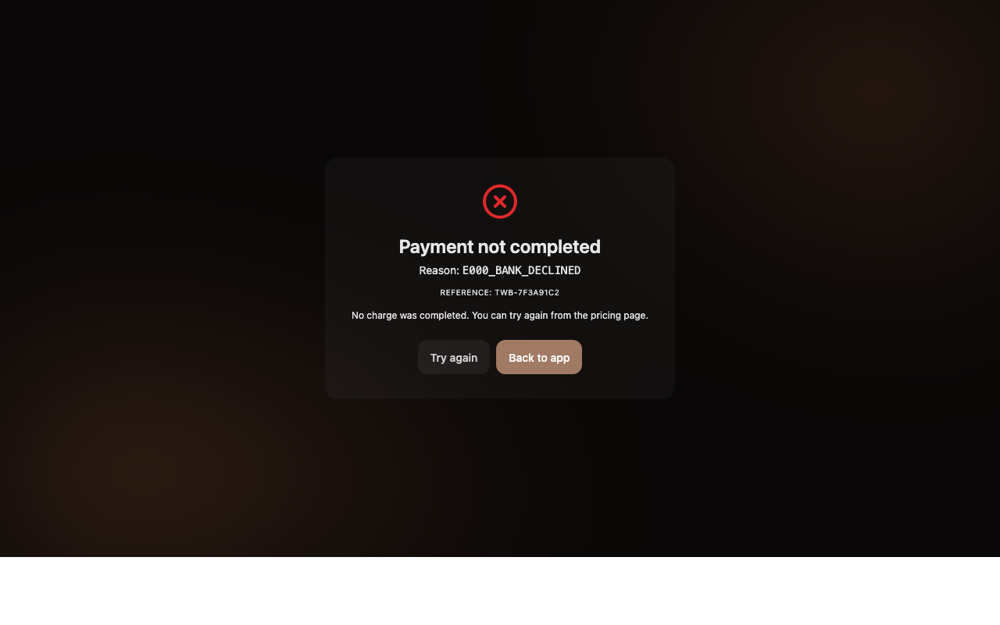
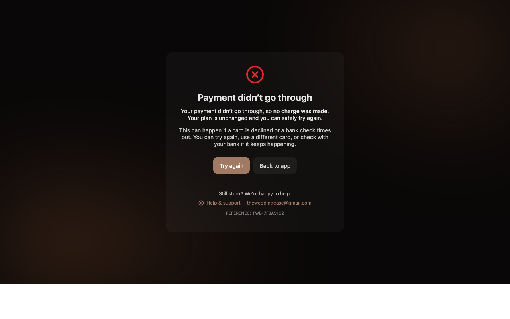

src/pages/PaymentFailure.tsx rendered a raw gateway reason string to the user
(Reason: <reason> in a monospace span) plus a bare "Try again" / "Back to app"
pair, with no Help/Support link. This fails WCAG 3.3.3 (Error Suggestion),
3.2.6 (Consistent Help), and 3.3.4 (Error Prevention) — and at a high-cognitive-load moment
(a failed payment) it exposes jargon that increases anxiety.
Ruling applied: generic graceful message + Help, NO PayU-error-code guessing. (This overrides the ticket's original "Expected" section, which had proposed a PayU-code → plain-English mapping table.)
/payment/failure?reason=<code>&txnid=<id> shows the raw reason code verbatim and offers no help link. Captured before-repro.png (desktop).Reason: {reason} on line 25-27 leaks the gateway code; no /help link anywhere on the page.mailto:theweddingease@gmail.com and the /help route exists in App.tsx. Reused both for consistent-help placement (3.2.6).track() only). Added: reassurance "no charge was made / your plan is unchanged" (3.3.4); plain-language next-steps "try again, use a different card, or check with your bank" without naming a specific error (3.3.3); a persistent Help & support block linking /help + support email (3.2.6); role="alert" + aria-labelledby + aria-hidden on the icon for SR semantics. Demoted the txnid to a quiet support reference. Title changed to "Payment not completed".npx tsc --noEmit → clean, 0 errors.npx eslint crashes with TypeError: Error while loading rule '@typescript-eslint/no-unused-expressions': Cannot read properties of undefined (reading 'allowShortCircuit') — eslint 9.39.4 vs typescript-eslint 8.11.0 (both pinned in package-lock.json). Verified it fails IDENTICALLY on an untouched file (PaymentSuccess.tsx), so it is environmental, not introduced here. Substituted vite build as the compile/bundle gate.npx vite build → ✓ built in 5.33s, no errors, all chunks emitted.| Criterion | How it’s satisfied |
|---|---|
| 3.3.3 Error Suggestion (AA) | Plain-language next steps: try again / use a different card / check with your bank — without guessing a specific gateway code. |
| 3.2.6 Consistent Help (WCAG 2.2 A) | Persistent Help & support block: /help link + theweddingease@gmail.com, matching the contact pattern used elsewhere in the app. |
| 3.3.4 Error Prevention (AA) | Explicit reassurance: "no charge was made", "your plan is unchanged", "you can safely try again". |
qa-harness/evidence/WE-20260528-1078/screenshots/before-repro.pngqa-harness/evidence/WE-20260528-1078/screenshots/after-fix.pngqa-harness/evidence/WE-20260528-1078/screenshots/after-fix-tablet.pngqa-harness/evidence/WE-20260528-1078/screenshots/after-fix-mobile.pngBefore (raw reason code, no help):

After (graceful copy + help, no code):

| Layer | Command | Result |
|---|---|---|
| Type-check | npx tsc --noEmit | clean (0 errors) |
| Build | npx vite build | ✓ built in 5.33s |
| Lint | npx eslint src/pages/PaymentFailure.tsx | blocked — pre-existing repo-wide eslint/ts-eslint version clash (fails on untouched files too) |
| Unit / Component | n/a | no vitest/RTL infra; would require new deps (forbidden) |
| Visual (responsive) | Chromium screenshots @ 1280/768/390 | desktop / tablet / mobile rendered |
Wedding-Ease-Viva-Chat/src/pages/PaymentFailure.tsx | 89 ++++++++++++++++++++++++----------- 1 file changed
PR URL: https://github.com/MeghaPatel07/easeBot/pull/108 (base: Bug-Resolve-claude)